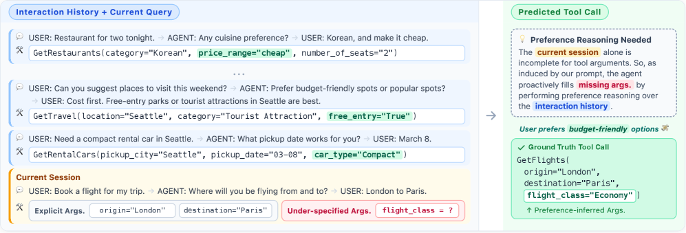

The paper introduces MPT, a 265-dialogue / 2,020-session benchmark for cross-session personalized tool calling across Preference Recall, Induction, and Transfer, and proposes PRefine, a generate–verify–refine memory that stores latent preferences as revisable hypotheses and consumes only 1.24% of full-history tokens while improving tool-calling accuracy.

LLM-based agents increasingly rely on external tools that demand fully specified arguments, yet real users habitually under-specify their requests. Completing such incomplete requests requires more than retrieving similar past actions — it requires abstracting implicit, persistent constraints that guide decision-making across contexts and sessions.
Prior personalization work assumes preferences are either directly available (as static profiles or predefined instructions) or emerge through explicit repeated actions inside a narrow domain. Modern agents, however, operate over diverse task spaces without predefined preference specifications. While LLMs can surface similar past actions easily, they struggle to abstract cross-domain regularities into generalizable preference hypotheses that transfer to new contexts.
Motivating example: A user who consistently picks budget-friendly options across flights, restaurants, and hotels reveals a latent preference for economy-class travel — even without ever stating it. This constraint is distributed across sessions and domains, emerges only from accumulated evidence, and must be refined as new behaviors are observed.
This motivates two open questions that drive the paper: (i) how should such latent preferences be represented and maintained efficiently, and (ii) can they transfer across domains and even across differing API schemas?
PRefine treats latent preferences not as static facts to retrieve but as revisable hypotheses of preference constraints. It maintains a single compact memory entry — the best current abstraction of behavioral regularities — and updates it through each new session via a generate–verify–refine loop.
Worked example. Session 1 observes GetMovies(average_rating=6); the initial "prefers moderately rated movies" hypothesis fails verification as over-specific and refines to "minimal interest in movies". Later sessions with GetRentalCars(car_type=Standard) and GetRestaurants(price_range=Cheap) lead to the cross-domain abstraction "economical and simple options across domains," which is retained as memory and later grounded when booking flights.
MPT (Multi-Session Personalized Tool Calling) targets cross-session personalization directly. It is built on top of Schema-Guided Dialogue (SGD) with multi-session grouping and manual preference annotations.
| Statistic | Value |
|---|---|
| Multi-session dialogues | 265 |
| Total sessions | 2,020 |
| Total turns | 39,884 |
| Avg. sessions per dialogue | 7.6 |
| Avg. turns per session | 19.7 |
MPT defines three evaluation challenges that isolate distinct personalization abilities:
flight_class=Economy).Each instance is evaluated under two query types: context-guided queries include in-session dialogue providing partial explicit constraints, while context-free queries omit context to isolate pure preference modeling capability. Preferences are manually grouped over 58 API–argument pairs (e.g., Budget: price_range=cheap, car_type=Compact, flight_class=Economy; Travel group size: passengers=1 vs. passengers=2-4). Nineteen human annotators achieved 89.7% agreement on budget groupings and 97.4% on travel groupings.
Eight inference LLMs were evaluated (CodeGemma-7B, Gemma-3-12B, R1-Distill-Llama-8B, R1-Distill-Qwen-7B, GPT-4o-mini, GPT-5-mini, GPT-5, Gemini-3-Flash) against four memory baselines: RAG, Mem0, LangMem, and PRefine.
| Challenge | Base P-EM | Base OA-F1 | PRefine ΔP-EM | PRefine ΔOA-F1 |
|---|---|---|---|---|
| Preference Recall | 33.51% | 54.94% | +13.11 | +11.99 |
| Preference Induction | 16.89% | 51.46% | +6.88 | +10.52 |
| Preference Transfer | 7.81% | 44.81% | +2.87 | +9.27 |
| Challenge | Base F1 | PRefine ΔF1 |
|---|---|---|
| Preference Recall | 33.62% | +9.82 |
| Preference Induction | 13.41% | +5.20 |
| Preference Transfer | 22.25% | +3.38 |
| Method | Memory Type | Update Mechanism | Actionable | Latent-Preference-Aware |
|---|---|---|---|---|
| RAG | Raw utterances | Static index | – | – |
| Mem0 | Extracted facts | Append / overwrite | – | – |
| LangMem | Structured facts | LLM rewrite | ✓ | – |
| PRefine | Latent constraints | Generate–verify–refine | ✓ | ✓ |
Personal agents will increasingly be judged not by isolated tool calls but by how well they accumulate understanding of a user across many sessions. This paper argues that effective personalization depends on capturing the reasons behind user choices, not just the choices themselves, and shows that a compact, revisable hypothesis is a far more scalable representation than raw history.